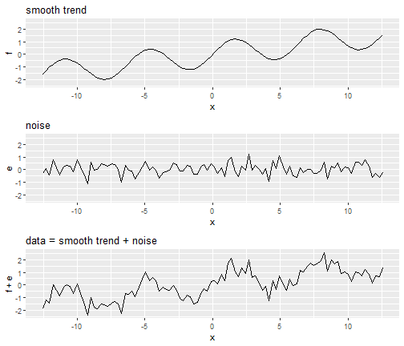
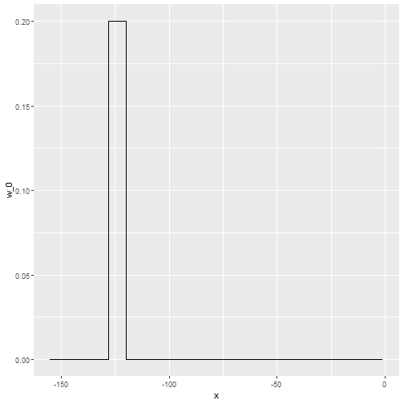
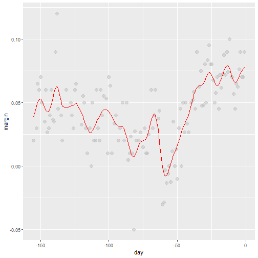
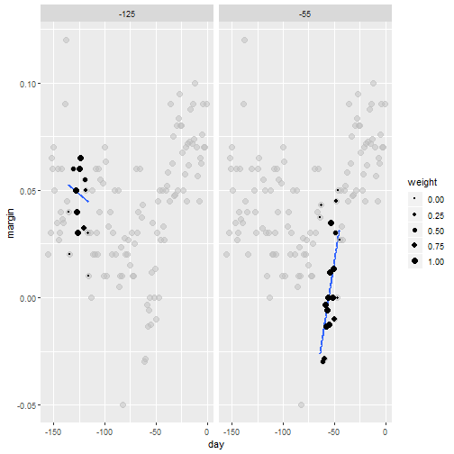
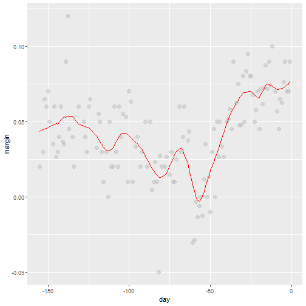
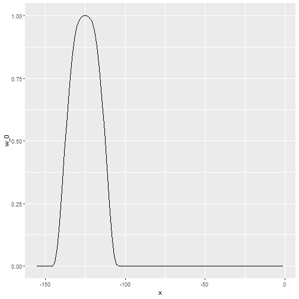
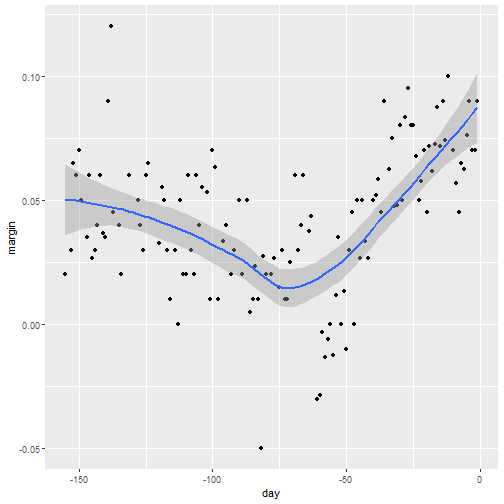

Non-parametric Methods
Adam J Sullivan
Assistant Professor of Biostatistics
Brown University
Non Parametric Statistics
What are they?
- Non parametrics means that you do not need to specify a specific distribution for the data.
- Many of the methods you have learned up to this point require data dealing with the normal distribution.
- This is due partially to the fact that the t-distribution, \(\chi^2\) distribution, and the \(F\) distribution can all be derived from the normal distribution.
- Traditionally you are just taught to use normallity and made to either transform the data or just go ahead knowing it is incorrect.
Normal vs Skewed Data
- Data that is normally distributed has:
- the mean and the median the same.
- The data is centered about the mean.
- Very specific probability values.
- Data that is skewed has:
- Mean less than median for left skewed data.
- Mean greater than median for right skewed data.
Why is this an issue?
- In 1998 a survey was given to Harvard students who entered in 1973:
- The mean salary was $750,000
- The median salary was $175,000
- What could be a problem with this?
- What happened here?
Why do we use Parametric Models?
- Parametric Models have more power so can more easily detect significant differences.
- Given large sample size Parametric models perform well even in non-normal data.
- Central limit theorem states that in research that can be perfromed over and over again, that the means are normally distributed.
- There are methods to deal with incorrect variances.
Why do we use Non Parametric Models?
- Your data is better represented by the median.
- You have small sample sizes.
- You cannot see the ability to replicate this work.
- You have ordinal data, ranked data, or outliers that you can’t remove.
What Non Parametric Tests will we cover?
- Sign Test
- Wilcoxon Signed-Rank Test
- Wilcoxon Rank-Sum Test (Mann-Whitney U Test, ...)
- Kruskal Wallis test
- Spearman Rank Correlation Coefficient
- Bootstrapping
The sign Test
The Sign Test
- The sign test can be used when comparing 2 samples of observarions when there is not independence of samples.
- It actually does compares matches together in order to accomplish its task.
- This is similar to the paired t-test
- No need for the assumption of normality.
- Uses the Binomial Distribution
Steps of the Sign Test
- We first match the data
- Then we subtract the 2nd value from the 1st value.
- You then look at the sign of each subtraction.
- If there is no difference between the two groups you shoul have roughly 50% positives and 50% negatives.
- Compare the proportion of positives you have to a binomial with p=0.5.
Example: Binomial Test Function
- Consider the scenario where you have patients with Cystic Fibrosis and health individuals.
- Each subject with CF has been matched to a healthy individual on age, sex, height and weight.
- We will compare the Resting Energy Expenditure (kcal/day)
Reading in the Data
library(readr)
ree <- read_csv("ree.csv")
ree
## # A tibble: 13 x 2
## CF Healthy
## <dbl> <dbl>
## 1 1153 996
## 2 1132 1080
## 3 1165 1182
## 4 1460 1452
## 5 1634 1162
## 6 1493 1619
## 7 1358 1140
## 8 1453 1123
## 9 1185 1113
## 10 1824 1463
## 11 1793 1632
## 12 1930 1614
## 13 2075 1836
Function in R
- Comes from the
BDSAPackage
SIGN.test(x ,y, md=0, alternative = "two.sidesd",
conf.level=0.95)
- Where
xis a vector of valuesyis an optional vector of values.mdis median and defaults to 0.alternativeis way to specific type of test.conf.levelspecifies \(1-\alpha\).
Getting Package
# install.packages("devtools")
# devtools::install_github('alanarnholt/BSDA')
Our Data
library(BSDA)
attach(ree)
SIGN.test(CF, Healthy)
detach()
Our Data
##
## Dependent-samples Sign-Test
##
## data: CF and Healthy
## S = 10, p-value = 0.02
## alternative hypothesis: true median difference is not equal to 0
## 95 percent confidence interval:
## 25.4 324.5
## sample estimates:
## median of x-y
## 161
##
## Achieved and Interpolated Confidence Intervals:
##
## Conf.Level L.E.pt U.E.pt
## Lower Achieved CI 0.908 52.0 316
## Interpolated CI 0.950 25.4 324
## Upper Achieved CI 0.978 8.0 330
By "Hand"
- Subtract Values
library(tidyverse)
ree <- ree %>%
mutate(diff = CF - Healthy)
ree
By "Hand"
- count negatives
## # A tibble: 13 x 3
## CF Healthy diff
## <dbl> <dbl> <dbl>
## 1 1153 996 157
## 2 1132 1080 52
## 3 1165 1182 -17
## 4 1460 1452 8
## 5 1634 1162 472
## 6 1493 1619 -126
## 7 1358 1140 218
## 8 1453 1123 330
## 9 1185 1113 72
## 10 1824 1463 361
## 11 1793 1632 161
## 12 1930 1614 316
## 13 2075 1836 239
By "Hand"
binom.test(2,13)
##
## Exact binomial test
##
## data: 2 and 13
## number of successes = 2, number of trials = 10, p-value = 0.02
## alternative hypothesis: true probability of success is not equal to 0.5
## 95 percent confidence interval:
## 0.0192 0.4545
## sample estimates:
## probability of success
## 0.154
Wilcoxon Signed-Rank Test
Wilcoxon Signed-Rank Test
- The sign test works well but it truly ignores the magntiude of the differences.
- Sign test often not used due to this problem.
- Wilcoxon Signed Rank takes into account both the sign and the rank
How does it work?
- Pairs the data based on study design.
- Subtracts data just like the sign test.
- Ranks the magnitude of the difference:
8
-17
52
-76
What happens with these ranks?
| Subtraction | Positive Ranks | Negative Ranks |
|---|---|---|
| 8 | 1 | |
| -17 | -2 | |
| 52 | 3 | |
| -76 | -4 | |
| Sum | 4 | -6 |
What about after the sum?
- \(W_{+}= 1 + 3 = 4\)
- \(W_{-} + -2 + -4 = -6\)
- Mean: \(\dfrac{n(n+1)}{4}\)
- Variance: \(\dfrac{n(n+1)(2n+1)}{24}\)
What about after the sum?
- Any ties, \(t\): decrease variance by \(t^3-\dfrac{t}{48}\)
- z test:
\[ z =\dfrac{W_{smaller}- \dfrac{n(n+1)}{4}}{\sqrt{\dfrac{n(n+1)(2n+1)}{24}-t^3-\dfrac{t}{48}}}\]
Wilcoxon Signed Rank in R
attach(ree)
wilcox.test(CF, Healthy, paired=T)
detach(ree)
##
## Wilcoxon signed rank test
##
## data: CF and Healthy
## V = 80, p-value = 0.005
## alternative hypothesis: true location shift is not equal to 0
Wilcoxon Rank-Sum Test
Wilcoxon Rank-Sum Test
- This test is used on indepdent data.
- It is the non-parametric version of the 2-sample \(t\)-test.
- Does not requre normality or equal variance.
How do we do it?
- Order each sample from least to greatest
- Rank them.
- Sum the ranks of each sample
What do we do with summed ranks?
- \(W_s\) smaller of 2 sums.
- Mean: \(\dfrac{n_s(n_s+n_L + 1)}{2}\)
- Variance: \(\dfrac{n_sn_L(n_s+n_L+1)}{12}\)
- z-test
\[ z = \dfrac{W_s-\dfrac{n_s(n_s+n_L + 1)}{2}}{\sqrt{\dfrac{n_sn_L(n_s+n_L+1)}{12}}}\]
Wilcoxon Rank-Sum in R
- Consider built in data
mtcars
library(tidyverse)
cars <- as_data_frame(mtcars)
cars
## # A tibble: 32 x 11
## mpg cyl disp hp drat wt qsec vs am gear carb
## <dbl> <dbl> <dbl> <dbl> <dbl> <dbl> <dbl> <dbl> <dbl> <dbl> <dbl>
## 1 21 6 160 110 3.9 2.62 16.5 0 1 4 4
## 2 21 6 160 110 3.9 2.88 17.0 0 1 4 4
## 3 22.8 4 108 93 3.85 2.32 18.6 1 1 4 1
## 4 21.4 6 258 110 3.08 3.22 19.4 1 0 3 1
## 5 18.7 8 360 175 3.15 3.44 17.0 0 0 3 2
## 6 18.1 6 225 105 2.76 3.46 20.2 1 0 3 1
## 7 14.3 8 360 245 3.21 3.57 15.8 0 0 3 4
## 8 24.4 4 147. 62 3.69 3.19 20 1 0 4 2
## 9 22.8 4 141. 95 3.92 3.15 22.9 1 0 4 2
## 10 19.2 6 168. 123 3.92 3.44 18.3 1 0 4 4
## # ... with 22 more rows
Wilcoxon Rank-Sum in R
- We will Consider
mpgandam mpg: Miles Per Gallon on Averageam- 0: automatic transmission
- 1: manual transmission
Wilcoxon Rank-Sum in R
attach(cars)
wilcox.test(mpg, am)
detach(cars)
##
## Wilcoxon rank sum test with continuity correction
##
## data: mpg and am
## W = 1000, p-value = 3e-12
## alternative hypothesis: true location shift is not equal to 0
Kruskal Wallis Test
Kruskal Wallis Test
- If we have multiple groups of independent data that are not normally distributed or have variance issues, you can use the Kruskal Wallis Test.
- It tests significant differences in medians of the groups.
- This is a non-parametric method for One-Way ANOVA.
- Harder to try and calculate by hand, so we will just use R.
Kruskal Wallis Test in R
kruskal.test(formula, data, subset, ...)
- Where
formulaisy~xor can enteroutcome,groupinstead.datais the dataframe of interest.subsetif you wish to test subset of data.
Arthritis Data
- comes from the
BSDApackage. Arthriti
| Variable | Description |
|---|---|
time |
Time in Days until patient felt relief |
treatment |
Factor with three levels A, B, and C |
Arthritis Data
library(BSDA)
Arthriti
## # A tibble: 51 x 2
## time treatment
## <int> <fct>
## 1 40 A
## 2 35 A
## 3 47 A
## 4 52 A
## 5 31 A
## 6 61 A
## 7 92 A
## 8 46 A
## 9 50 A
## 10 49 A
## # ... with 41 more rows
Kruskal-Wallis Test in R
kruskal.test(time~treatment, data=Arthriti)
##
## Kruskal-Wallis rank sum test
##
## data: time by treatment
## Kruskal-Wallis chi-squared = 2, df = 2, p-value = 0.4
Spearman Rank Correlation Coefficient
Spearman Rank Correlation Coefficient
- Correlation is a measurement of the strength of a linear relationship between variables.
- This means it does not necessarily get the actual magnitude of relationship.
- Spearman Rank Correlation seeks to fix this.
- It works with Montonic Data.
Monotonic Data

Spearman Rank Correlation in R
- We can do this the the
cor()function.
#Pearson from Monotonic Decreasing
cor(x2,y2, method="pearson")
#Spearman from Monotonic Decreasing
cor(x2,y2, method="spearman")
## [1] -0.887
## [1] -0.996
Smoothing
Smoothing
- Smoothing is a very powerful technique used all across data analysis.
- It is designed to detect trends in the presence of noisy data in cases in which the shape of the trend is unknown.
- The smoothing name comes from the fact that to accomplish this feat, we assume that the trend is smooth, as in a smooth surface.
Smoothing

Why Smoothing?
- Lets focus on one covariate
- Let's estimate a time trend on popular vote poll margins
library(tidyverse)
library(dslabs)
data("polls_2008")
qplot(day, margin, data = polls_2008)
Why Smoothing?

Smoothing Example
- We assume that for any given day \(x\), there is a true preference among the electorate \(f(x)\), but due to the uncertainty introduced by the polling, each data point comes with an error \(\varepsilon\).
- A mathematical model for the observed poll margin \(Y_i\) is: \[ Y_i = f(x_i) + \varepsilon_i \]
- If we knew the conditional expectation \(f(x) = \mbox{E}(Y \mid X=x)\), we would use it.
- Since we don't know this conditional expectation, we have to estimate it.
Smoothing Example
- Let's use regression
resid <- ifelse(lm(margin~day, data = polls_2008)$resid > 0, "+", "-")
polls_2008 %>%
mutate(resid = resid) %>%
ggplot(aes(day, margin)) +
geom_smooth(method = "lm", se = FALSE, color = "black") +
geom_point(aes(color = resid), size = 3)
Smoothing Example

Smoothing Example
- The lines do not fit the data well.
- There is not an evenn distribution of positive and negative residuals.
- There is also not a clear pattern like a polynomial terms we could add.
Bin smoothing
- The general idea of smoothing is to group data points into strata in which the value of \(f(x)\) can be assumed to be constant.
- We can make this assumption because we think \(f(x)\) changes slowly and, as a result, \(f(x)\) is almost constant in small windows of time.
- An example of this idea for the
poll_2008data is to assume that public opinion remained approximately the same within a week's time. With this assumption in place, we have several data points with the same expected value.
Bin smoothing
- If we fix a day to be in the center of our week, call it \(x_0\), then for any other day \(x\) such that \(|x - x_0| \leq 3.5\), we assume \(f(x)\) is a constant \(f(x) = \mu\).
- This assumption implies that: \[ E[Y_i | X_i = x_i ] \approx \mu \mbox{ if } |x_i - x_0| \leq 3.5 \]
- In smoothing, we call the size of the interval satisfying \(|x_i - x_0| \leq 3.5\) the window size, bandwidth or span.
- Later we will see that we try to optimize this parameter.
Bin smoothing
- This assumption implies that a good estimate for \(f(x)\) is the average of the \(Y_i\) values in the window.
- If we define \(A_0\) as the set of indexes \(i\) such that \(|x_i - x_0| \leq 3.5\) and \(N_0\) as the number of indexes in \(A_0\), then our estimate is: \[ \hat{f}(x_0) = \frac{1}{N_0} \sum_{i \in A_0} Y_i \]
- The idea behind bin smoothing is to make this calculation with each value of \(x\) as the center.
- In the poll example, for each day, we would compute the average of the values within a week with that day in the center.
Bin smoothing
- Here are two examples: \(x_0 = -125\) and \(x_0 = -55\).
- The blue segment represents the resulting average.
span <- 3.5
tmp <- polls_2008 %>%
crossing(center = polls_2008$day) %>%
mutate(dist = abs(day - center)) %>%
filter(dist <= span)
tmp %>% filter(center %in% c(-125, -55)) %>%
ggplot(aes(day, margin)) +
geom_point(data = polls_2008, size = 3, alpha = 0.5, color = "grey") +
geom_point(size = 2) +
geom_smooth(aes(group = center),
method = "lm", formula=y~1, se = FALSE) +
facet_wrap(~center)
Bin smoothing

Bin smoothing
- By computing this mean for every point, we form an estimate of the underlying curve \(f(x)\).
- At each value of \(x_0\), we keep the estimate \(\hat{f}(x_0)\) and move on to the next point:
Bin smoothing Animation

Binsmoothing Results
span <- 7
fit <- with(polls_2008,
ksmooth(day, margin, x.points = day, kernel="box", bandwidth = span))
polls_2008 %>% mutate(smooth = fit$y) %>%
ggplot(aes(day, margin)) +
geom_point(size = 3, alpha = .5, color = "grey") +
geom_line(aes(day, smooth), color="red")
Binsmoothing Results

Kernels
- Binsmooth leaves a wiggly results
- This is due to points changing when the window is moved.
- We could weight the center more than outside points to solve this problems.
- Then the outside points no longer have much weight
- This new result would be a weighted average.
Kernels
- Each points receives a weight of either \(0\) or \(1/N_0\), with \(N_0\) the number of points in the week.
\[ \hat{f}(x_0) = \sum_{i=1}^N w_0(x_i) Y_i \]
Kernels
- In the code above, we used the argument
kernel=boxin our call to the functionksmooth. - This is because the weight function looks like a box:
Kernels

Kernels
- The
ksmoothfunction provides a "smoother" option which uses the normal density to assign weights:
x_0 <- -125
tmp <- with(data.frame(day = seq(min(polls_2008$day), max(polls_2008$day), .25)),
ksmooth(day, 1*I(day == x_0), kernel = "normal", x.points = day, bandwidth = span))
data.frame(x = tmp$x, w_0 = tmp$y) %>%
mutate(w_0 = w_0/sum(w_0)) %>%
ggplot(aes(x, w_0)) +
geom_line()
Kernels

Kernels Animation

Kernels Code
The final code and resulting plot look like this:
span <- 7
fit <- with(polls_2008,
ksmooth(day, margin, x.points = day, kernel="normal", bandwidth = span))
polls_2008 %>% mutate(smooth = fit$y) %>%
ggplot(aes(day, margin)) +
geom_point(size = 3, alpha = .5, color = "grey") +
geom_line(aes(day, smooth), color="red")
Kernels Code

Kernels Comments
- There are several functions in R that implement bin smoothers.
- One example is
ksmooth, shown above. - Usually more complex methods are preferred.
- Even the averaged one is a bit coarse in places.
Local weighted regression (loess)
- A limitation of the bin smoother approach just described is that we need small windows for the approximately constant assumptions to hold.
- As a result, we end up with a small number of data points to average and obtain imprecise estimates \(\hat{f}(x)\).
- loess. To do this, we will use a mathematical result, referred to as Taylor's Theorem, which tells us that if you look closely enough at any smooth function \(f(x)\), it will look like a line.
loess
- Instead of assuming constand in a window, we assumes it is linear in a local area.
- We can then have larger window sizes than just a constant number.
- Let's consider a 3 week window instead of the 1 week. \[ E[Y_i | X_i = x_i ] = \beta_0 + \beta_1 (x_i-x_0) \mbox{ if } |x_i - x_0| \leq 21 \]
- For every point \(x_0\), loess defines a window and fits a line within that window.
loess

loess Animation

library(broom)
fit <- loess(margin ~ day, degree=1, span = span, data=polls_2008)
loess_fit <- augment(fit)
if(!file.exists(file.path("loess-animation.gif"))){
p <- ggplot(tmp, aes(day, margin)) +
scale_size(range = c(0, 3)) +
geom_smooth(aes(group = center, frame = center, weight = weight), method = "lm", se = FALSE) +
geom_point(data = polls_2008, size = 3, alpha = .5, color = "grey") +
geom_point(aes(size = weight, frame = center)) +
geom_line(aes(x=day, y = .fitted, frame = day, cumulative = TRUE),
data = loess_fit, color = "red")
gganimate(p, filename = file.path("loess-animation.gif"), interval= .1)
}
if(knitr::is_html_output()){
knitr::include_graphics(file.path("loess-animation.gif"))
} else{
centers <- quantile(tmp$center, seq(1,6)/6)
tmp_loess_fit <- crossing(center=centers, loess_fit) %>%
group_by(center) %>%
filter(day <= center) %>%
ungroup()
tmp %>% filter(center %in% centers) %>%
ggplot() +
geom_smooth(aes(day, margin), method = "lm", se = FALSE) +
geom_point(aes(day, margin, size = weight), data = polls_2008, size = 3, alpha = .5, color = "grey") +
geom_point(aes(day, margin)) +
geom_line(aes(x=day, y = .fitted), data = tmp_loess_fit, color = "red") +
facet_wrap(~center, nrow = 2)
}
loess Final Smooth
total_days <- diff(range(polls_2008$day))
span <- 21/total_days
fit <- loess(margin ~ day, degree=1, span = span, data=polls_2008)
polls_2008 %>% mutate(smooth = fit$fitted) %>%
ggplot(aes(day, margin)) +
geom_point(size = 3, alpha = .5, color = "grey") +
geom_line(aes(day, smooth), color="red")
loess Final Smooth

loess spans
- Different spans give us different estimates.
- We can see how different window sizes lead to different estimates:

spans <- c(.66, 0.25, 0.15, 0.10)
fits <- data_frame(span = spans) %>%
group_by(span) %>%
do(broom::augment(loess(margin ~ day, degree=1, span = .$span, data=polls_2008)))
tmp <- fits %>%
crossing(span = spans, center = polls_2008$day) %>%
mutate(dist = abs(day - center)) %>%
filter(rank(dist) / n() <= span) %>%
mutate(weight = (1 - (dist / max(dist)) ^ 3) ^ 3)
if(!file.exists(file.path( "loess-multi-span-animation.gif"))){
p <- ggplot(tmp, aes(day, margin)) +
scale_size(range = c(0, 2)) +
geom_smooth(aes(group = center, frame = center, weight = weight), method = "lm", se = FALSE) +
geom_point(data = polls_2008, size = 2, alpha = .5, color = "grey") +
geom_line(aes(x=day, y = .fitted, frame = day, cumulative = TRUE),
data = fits, color = "red") +
geom_point(aes(size = weight, frame = center)) +
facet_wrap(~span)
gganimate(p, filename = file.path( "loess-multi-span-animation.gif"), interval= .1)
}
if(knitr::is_html_output()){
knitr::include_graphics(file.path("loess-multi-span-animation.gif"))
} else{
centers <- quantile(tmp$center, seq(1,4)/4)
tmp_fits <- crossing(center=centers, fits) %>%
group_by(center) %>%
filter(day <= center) %>%
ungroup()
tmp %>% filter(center %in% centers) %>%
ggplot() +
geom_smooth(aes(day, margin), method = "lm", se = FALSE) +
geom_point(aes(day, margin, size = weight), data = polls_2008, size = 3, alpha = .5, color = "grey") +
geom_point(aes(day, margin)) +
geom_line(aes(x=day, y = .fitted), data = tmp_fits, color = "red") +
facet_grid(span ~ center)
}
loess Smooths
## Error in fortify(data): object 'fits' not found
loess vs Normal Bin Smoother
- There are three other differences between
loessand the typical bin smoother.loesskeeps the number of points used in the local fit the same.- When fitting a line locally,
loessuses a weighted approach. Basically, instead of using least squares, we minimize a weighted version. loesshas the option of fitting the local model robustly. An iterative algorithm is implemented in which, after fitting a model in one iteration, outliers are detected and down-weighted for the next iteration. To use this option, we use the argumentfamily="symmetric".
--- .class #id
loess Keeping Same number of Points
- This number is controlled via the
spanargument, which expects a proportion. - For example, if
Nis the number of data points andspan=0.5, then for a given \(x\),loesswill use the0.5 * Nclosest points to \(x\) for the fit.
-- .class #id
loess Weighted Approach
\[ \sum_{i=1}^N w_0(x_i) \left[Y_i - \left\{\beta_0 + \beta_1 (x_i-x_0)\right\}\right]^2 \]
- Instead of the Gaussian kernel, loess uses a function called the Tukey tri-weight: \[ W(u)= \left( 1 - |u|^3\right)^3 \mbox{ if } |u| \leq 1 \mbox{ and } W(u) = 0 \mbox{ if } |u| > 1 \]
- To define the weights, we denote \(2h\) as the window size and define: \[ w_0(x_i) = W\left(\frac{x_i - x_0}{h}\right) \]
-- .class #id
loess Weighted Approach
- This kernel differs from the Gaussian kernel in that more points get values closer to the max:

Default Smoothing
ggplotuses loess in itsgeom_smoothfunction:

Default Smoothing
polls_2008 %>% ggplot(aes(day, margin)) +
geom_point() +
geom_smooth()
Default Smoothing
- We can change the default smoothing
polls_2008 %>% ggplot(aes(day, margin)) +
geom_point() +
geom_smooth(color="red", span = 0.15,
method.args = list(degree=1))
Default Smoothing